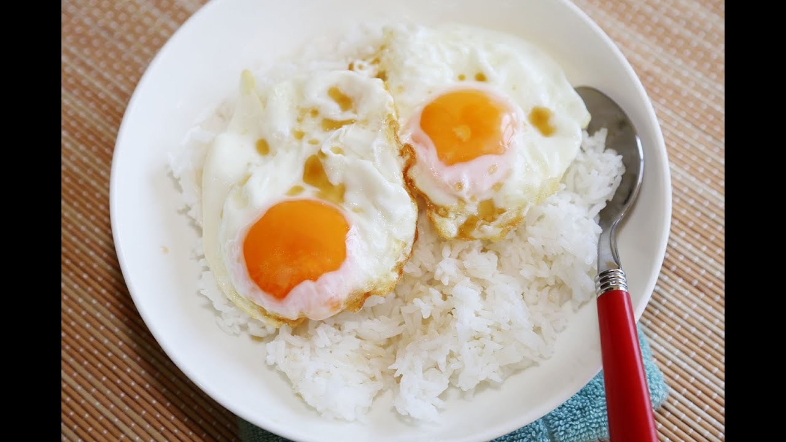

Your guide to making the least disturbing eggs, with a side of rice

Eggs are the source of life, and non-processed rice will help support that healthy, keto free brain function
As subscribers to the living life, we should be eating life itself in our efforts to maintain our bodies as nature intended. For a long time, I was on and off vegan/vegetarian. For many years, I was constantly sick. It was so bad that I was essentially never not sick. After years of this torture, I decided to eat an egg heavy diet, about 7 to 8 per day, without regards to high cholesterol levels. I found that after a few weeks, without a sinlge change to anything else in my life, I miraculously stopped being sick. I am not saying there is anything wrong with the vegan/vegetarian lifestyle, but I would recommend to anyone with bodily issues to give this a try :)
Ingredients
All ingredients are exact
- 8 eggs
- 1 cup basmati or jasmine rice
- 1.125 cups water
- 1 tablespoon organic, natural butter
- Sriracha
- Ketchup, prefereably natural
- Garlic powder
- Salt
- Pepper
- Rice Cooker
- Non-stick, BPA free pan
Nutrition info
- Time: 20 minutes
- Prep time: 5 minutes
- Servings: 1
- Yield: 1 big man meal
Directions
- Wash rice until water runs absolutely clear
- Place washed rice in rice cooker with water and turn on
- Heat pan on the medium-high setting on the stove
- Put .5 tablespoons butter onto the pan and spread it around
- Once melted, crack 4 eggs into the pan and let sit for about 8 minutes, or untilvery dark and crispy on the bottom
- While cooking, sprinkle your seasonings over the eggs
- Once crispy, flip the eggs and cook for about 2 minutes
- Repeat this process with the over 4 eggs
- Right before the 2nd batch of eggs are done, spread your rice out on your plate as a thin-medium thick layer
- Place the second batch of eggs on the rice, and then heat up your first batch of eggs on the crispy side on the pan again for a minute or two
- Place your first batch of eggs on the plate at the location of your preference
- You're now ready to nosh!!
- While you're eating, spray little squirts of either sriracha or ketchup on your eggs as you eat on a bit-by-bite basis
- It is Forbidden to put ketchup on any bite that contains a non-negligible amount of rice
Enjoy please!!!
Return to homepage